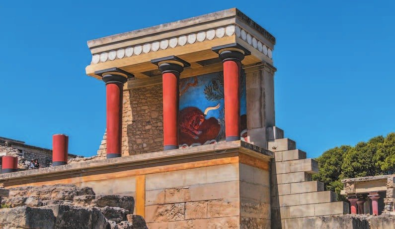
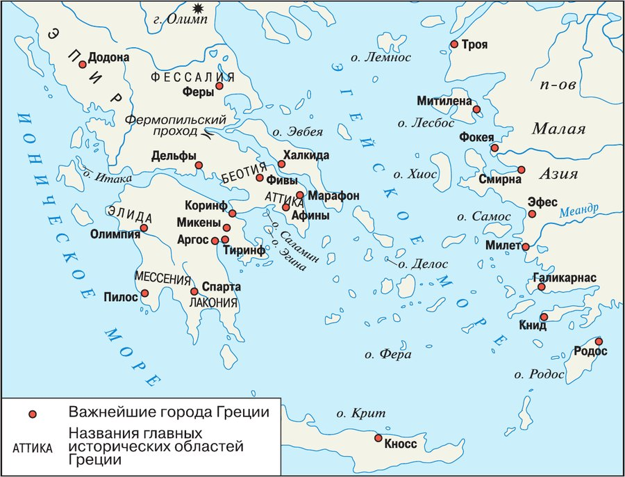
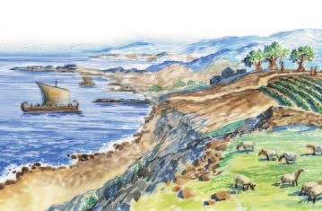
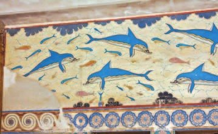
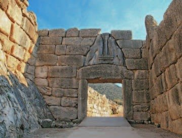
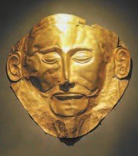

Природа и жизнь
Греция — страна гор. Горы невысокие, но пройти через них трудно. Самая высокая — .
Горы — и защита, и помеха. Врагу через них не пройти. Но и грекам трудно объединиться: горы делят страну на много маленьких государств.
Горы покрывал лес. Из него строили корабли.
Берега изрезаны заливами и бухтами — в них корабли прятались от бурь. А островов столько, что по ним, как по ступенькам, плыли далеко за море.
Лето долгое, жаркое и сухое. Зимой сильных морозов почти нет, зато идут дожди. Море делает климат мягче.
Чего мало? Больших рек нет совсем, а мелкие летом пересыхают. Ровной плодородной земли для хлеба и коров тоже мало. Почва каменистая и сухая.
Что есть? На склонах гор хорошо растут оливки и виноград. На холмах пасутся овцы и козы. Почти везде есть глина — из неё греки делали расписные сосуды, и их покупали по всему Средиземноморью. Много камня и мрамора — из них строили дома и храмы. Из металлов есть железо, серебро и золото, остальные привозили.
Греция — горная страна, значительную её часть занимают невысокие, но труднопроходимые горы, самая высокая из них — Олимп. Горы служили не только надёжной защитой от внешних вторжений, но и препятствием к объединению раздробленных греческих государств. В древности горы были покрыты лесом, который использовался главным образом для строительства кораблей.
Берега Греции изрезаны множеством заливов и бухт, служивших надёжным укрытием для кораблей. Многочисленные острова и островки были удобными ориентирами и местами промежуточных стоянок в дальних плаваниях.
Климат Греции полузасушливый, с долгим жарким и сухим летом. Зимой почти не бывает сильных холодов, но выпадает много осадков в виде дождя. На севере Греции зима холоднее, чем на юге. Однако близость моря способствует мягкости климата.
Источников пресной воды в Греции недостаточно. Крупные реки совсем отсутствуют, а мелкие почти все пересыхают летом. Больших плодородных равнин, пригодных для земледелия и разведения крупного скота, в Греции тоже мало. Однако оливковые деревья и виноград хорошо росли на склонах гор. Стада овец и коз паслись на невысоких холмах, покрытых кустарником. Почва в Греции в основном каменистая, сухая, трудная для обработки. Но почти везде встречались природные залежи глины, из которой греки изготавливали посуду. Греческие расписные сосуды пользовались широким спросом во всём Средиземноморье.
В Греции было много строительного камня и мрамора, которые использовались для строительства домов, храмов и других сооружений. Из металлов в Греции встречаются железо, серебро, золото; другие металлы приходилось ввозить.

▲ Главный вопрос всей главы: что дала миру древнегреческая цивилизация?

▲ Используя рисунок, опиши значение этой фразы.
- Какие природные условия определили занятия древних греков?
1. Горы помогали грекам или мешали? Найди в тексте и то и другое.
2. Почва в Греции плохая. Как же глина помогла грекам?
3. Что связывает лес на горах и острова в море?
Минойская цивилизация
Посреди Средиземного моря лежит большой остров Крит. Он почти такой же большой, как Кипр, где ты была: тёплое море вокруг, горы, оливки.
Именно здесь в 3-м тысячелетии до н. э. появилась первая цивилизация Европы. Её создали — они жили на Крите ещё до греков. Учёные назвали их по имени царя .
Минос правил в городе . По мифам, он первым дал Криту законы и построил сильный флот. Флот прогнал пиратов — и торговать по морю стало безопасно.
Дворец царя был огромным: жилые комнаты, святилища богов, мастерские, кладовые, архивы — и даже ванные. Вода текла по глиняным трубам. Стены расписаны . Кое-где дворец поднимался на три и четыре этажа.
По мифу, в Кноссе жил — чудовище с телом человека и головой быка. Его держали в , здании с запутанными ходами. Герой Тесей Минотавра убил. А может, Лабиринтом и был сам дворец — столько в нём комнат и коридоров.
Простые люди жили в маленьких домах вокруг дворца. Они отдавали царю часть урожая — это налог. Ремесленники почти все работали на царя. Всё свозили в дворцовые кладовые.
Кто следил, сколько привезли и сколько выдали? Особые чиновники. Для этого учёта и придумали письменность. Таблички с минойскими письменами нашли — но прочитать их никто не может до сих пор.
Были на Крите и рабы — в основном у царя и знати.
Города Крита — Кносс, Фест и другие — богатели на торговле. За море везли вино, оливковое масло, расписные сосуды, украшения и бронзовое оружие.
Потом пришла беда: на соседнем острове взорвался вулкан. Крит пострадал, но выжил. А в середине XV века до н. э. минойская цивилизация всё-таки погибла: дворцы и посёлки сгорели.
На Крит пришли с материка — греческие племена. Они покорили остров и заново отстроили дворец в Кноссе. Большинство учёных думают: минойцы погибли как раз из-за этого вторжения.
В центре Средиземного моря лежит большой остров Крит. Именно здесь в 3-м — середине 2-го тысячелетия до н. э. существовала первая европейская цивилизация. Её создателями были минойцы — догреческое население острова, названное учёными по имени легендарного царя Миноса.
В греческой мифологии расцвет Крита связан с именем этого царя, правившего в Кноссе. В мифах говорится о том, что Минос первым ввёл законы на Крите и создал сильный флот. С помощью флота он искоренил пиратство и обеспечил безопасность морской торговли.
Царь жил в роскошном дворце с большим числом помещений. Это были жилые комнаты, святилища богов, ремесленные мастерские, многочисленные кладовые, помещения для архивов, ванные и туалетные комнаты. Вода во дворец поступала по глиняным трубам. Стены украшали фрески. Некоторые части дворца были трёх- и даже четырёхэтажные.
Простые люди жили за пределами дворца в небольших домах. Они платили правителю налоги в виде части урожая. Большинство ремесленников находились на службе у царя. Изготовленные ими изделия, как и часть урожая земледельцев, поступали в дворцовые кладовые. Поступавшую во дворец продукцию и дальнейшее её распределение строго учитывали и контролировали специальные чиновники. Для учёта была изобретена письменность. На Крите обнаружены таблички с минойскими письменами, не разгаданными до сих пор.
Кроме свободных людей, на Крите жили рабы, которые принадлежали в основном царю и знатным людям.
В период расцвета на Крите возникли многолюдные города: Кносс, Фест, Загрос, Тилисс, богатевшие за счёт оживлённой торговли. С острова вывозили вино, оливковое масло и изделия ремесленников. Особым спросом за пределами Крита пользовались изготовленные местными мастерами расписные сосуды, ювелирные украшения, бронзовое оружие.
Мощное извержение вулкана на соседнем острове Фера стало причиной разрушений на Крите, но минойская цивилизация это бедствие пережила. Она окончательно прекратила своё существование в середине XV (15) века до н. э. Большинство поселений и дворцов на Крите, в том числе и Кносский, было разрушено в результате пожаров.
После гибели минойской цивилизации на Крит переселились с материка греческие племена ахейцев, которые покорили местное население острова. Ахейцы, обосновавшись в Кноссе, отстроили заново дворец, из которого стали управлять большей частью острова.
Среди учёных нет единого мнения относительно причин гибели минойской цивилизации. Большинство из них в настоящее время считают, что это произошло в результате вторжения на остров ахейцев.

- С именем какого царя связан расцвет минойской цивилизации?
- Что свидетельствовало о высоком развитии минойской цивилизации?
4. Зачем царю острова сильный флот? И чем это помогло Криту разбогатеть?
5. Как связаны налоги, дворцовые кладовые и письменность Крита?
6. Извержение на Фере разрушило многое на Крите. Почему же учёные не считают его причиной гибели минойцев?
Микенская цивилизация
А на материке, в самой Греции, в середине 2-го тысячелетия до н. э. появились свои царства. Их создали те же . Царства были в Пилосе, Тиринфе, Фивах. Самое сильное — на полуострове .
Ахейцы многому научились у минойцев Крита. Их дворцы тоже были огромными, с водопроводом и канализацией, со фресками на стенах. Но есть главное отличие: микенский дворец — это крепость за мощными стенами.
Во главе — царь. Он же и главный жрец. Царю помогали чиновники и главный военачальник. Земледельцы отдавали в налог часть урожая, ремесленники — часть изделий. Чиновники всё учитывали. Для этого ахейцы сделали своё письмо — на основе минойского.
Рабов было немного — у царя и богачей.
Греки звали Микены «Златообильными» — богатыми золотом. Город стоял на высоком холме, а стены сложены из огромных каменных глыб. По легенде, их построили — одноглазые великаны.
В город входили через ворота с каменными львами. Дальше — дорога из каменных плит прямо к дворцу. В центре дворца — главный зал, : очаг, а вокруг четыре колонны. Здесь царь пировал с приближёнными и решал дела.
Микенцы торговали по всему Средиземноморью: их сосуды и оливковое масло хорошо покупали. А ещё цари Микен ходили походами на соседей. Об этих войнах потом рассказывали мифы.
Почему всё кончилось? В конце XII века до н. э. Микены пришли в упадок. Землетрясения. Долгая засуха и голод. Знатные роды ссорились, царства воевали друг с другом. А древние греки считали, что всё дело в — греческих племенах, пришедших с севера.
В середине 2-го тысячелетия до н. э. в различных областях материковой Греции возникли древнейшие государства в форме дворцовых царств. Наиболее известными были царства с центрами в Пилосе, Тиринфе, Фивах, а самым могущественным — со столицей в городе Микены на полуострове Пелопоннес. Эти царства создали греческие племена ахейцев. Учёные называют этот период греческой истории микенским или ахейским.
Многие элементы своей культуры, религии и государственного устройства ахейцы заимствовали у минойцев Крита. Дворцы ахейских царей были похожи на критские: с большим числом помещений разного назначения, с водопроводом, канализацией. Стены дворцов также украшали фрески. Но микенские дворцы имели свои особенности: обнесённые мощными стенами, они представляли собой крепости.
Во главе каждого государства стоял царь. Он назначал чиновников и должностных лиц, с помощью которых управлял государством и контролировал хозяйственную жизнь. Царь был одновременно и верховным жрецом. Большой властью обладал главный военачальник. Население платило царю налоги: земледельцы отдавали часть своего урожая, ремесленники — своих изделий. Чиновники вели строгий учёт того, что поступало во дворец в виде налогов. Для этого ахейцы создали свою письменность на основе минойского письма.
Низший слой общества составляли рабы. Их было немного, и они принадлежали царю и богатым людям.
Греки называли столицу Микенского царства «Златообильными Микенами». Город был построен на высоком холме и окружён кольцом мощных крепостных стен из огромных каменных глыб. По легенде, их возвели одноглазые великаны-циклопы.
Путники входили в Микены через ворота, увенчанные фигурами каменных львов. За воротами начиналась мощённая каменными плитами дорога, которая вела к центру города, где располагался царский дворец. В центре дворца находился главный зал с очагом, окружённым четырьмя колоннами, — мегарон. Здесь царь собирал приближённых на празднества и вёл государственные дела.
Микенцы осуществляли обширную торговлю в Восточном Средиземноморье. Микенские сосуды и оливковое масло пользовались широким спросом во всём Средиземноморье.
Цари Микен совершали военные походы против соседей, стараясь завоевать их земли. Воспоминания о таких походах сохранили греческие мифы.
В конце XII (12) века до н. э. микенская цивилизация пришла в упадок. Среди причин учёные называют землетрясения и длительную засуху, вызвавшую голод, внутренние раздоры между соперничавшими знатными родами и военные конфликты между микенскими царствами, которые привели к их ослаблению. Однако, согласно античной традиции, гибель микенской цивилизации связывают с переселением с севера Балканского полуострова греческих племён дорийцев.


- Что ахейцы позаимствовали у минойцев?
- Каковы причины гибели микенской цивилизации?
7. Почему критскому дворцу хватало флота, а микенский пришлось делать крепостью?
8. Как ахейцы связаны и с Критом, и с Микенами?
9. Почему маску до сих пор зовут «маской Агамемнона», хотя она старше этого царя?
Подведём итоги
- Вспомни, когда возникли цивилизации в Египте и Междуречье. Определи, где цивилизация появилась раньше.
- Какие группы населения составляли общество на Крите и в Микенах?
- Что было общего в Микенах и на Крите? В чём были различия?
- Какая природная катастрофа оказала влияние на судьбу цивилизаций Крита и Микен?
- Используя дополнительные источники информации, найди древнегреческие мифы, связанные с крито-микенской цивилизацией. Подготовь сообщение перед классом об одном из них по твоему выбору.
Так о Крите рассказывали древние авторы. Прочитай и ответь на вопросы.
Царь установил немало законов для жителей своего государства… Он утверждал, что законы заимствовал у отца своего Зевса… Создал он и сильный морской флот, подчинил много островов и первым основал морскую державу. В его царстве обитало ужасное чудовище с телом человека и головой быка, для него был построен Лабиринт — здание с множеством запутанных ходов. Каждые девять лет афиняне отправляли на остров семь юношей и семь девушек, которых царь отдавал чудовищу.
Сформулируй ответ на главный вопрос параграфа — что объединяло государства на Крите и в Микенах? Приведи два-три довода.
Проверь себя
Нажимай по очереди — от самого древнего события к самому близкому к нам.
1. Как называют первую европейскую цивилизацию, возникшую на Крите?
2. Что было в Кносском дворце?
3. Зачем на Крите придумали письменность?
4. Чем микенский дворец отличался от критского?
5. Какая природная катастрофа ударила по Криту?
6. Кто, по древнему преданию, виноват в гибели Микен?
Расскажи вслух
Природа Греции и занятия греков
- Горы: защищали от врагов, но мешали объединиться; лес с гор шёл на корабли. Бухты и острова — укрытия и стоянки для кораблей.
- Мало рек, равнин и хорошей земли — мало хлеба.
- Зато оливки и виноград на склонах, овцы и козы на холмах, глина для расписной посуды, камень и мрамор для храмов.
Крит и царь Минос
- На Крите в 3-м — середине 2-го тыс. до н. э. — первая цивилизация Европы, минойская.
- Минос: законы и сильный флот, который искоренил пиратство. Дворец в Кноссе: множество комнат, водопровод, фрески, 3—4 этажа.
- Налоги частью урожая, кладовые, чиновники и письменность для учёта — её не разгадали до сих пор.
«Златообильные Микены»
- Микены — самое сильное царство ахейцев, на Пелопоннесе, с середины 2-го тыс. до н. э.
- У минойцев переняли дворцы, водопровод, фрески, письмо. Своё — дворец-крепость.
- Стены из огромных глыб («циклопы»), Львиные ворота, мегарон с очагом и четырьмя колоннами.
Почему погибли Крит и Микены
- Крит пережил извержение на Фере, но в середине XV в. до н. э. дворцы сгорели.
- На остров пришли ахейцы — большинство учёных видят причину в их вторжении.
- Микены — конец XII в. до н. э.: землетрясения, засуха и голод, раздоры, войны; по преданию — приход дорийцев.
Главный вопрос: что объединяло Крит и Микены
- И там, и там — дворцовые царства: в центре царь и огромный дворец.
- Налоги свозили во дворец, чиновники всё учитывали — для этого и нужна была письменность.
- Те и другие торговали по морю: расписные сосуды, оливковое масло.